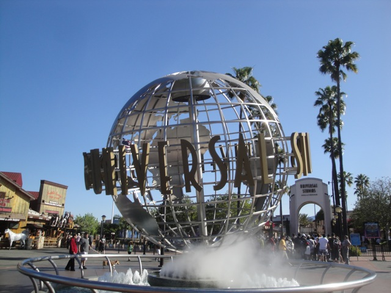
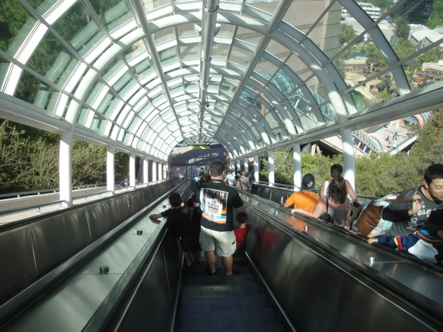
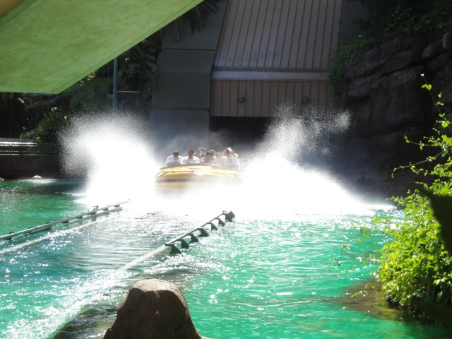
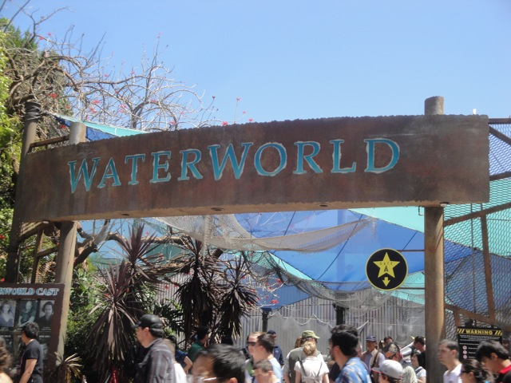
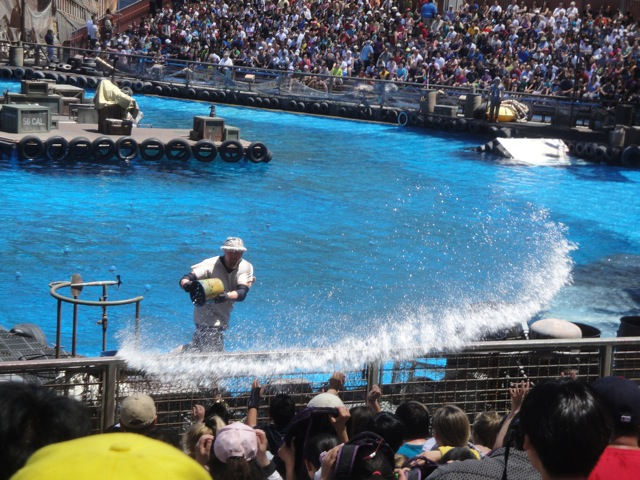
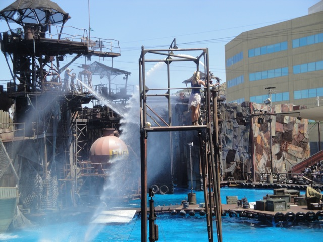
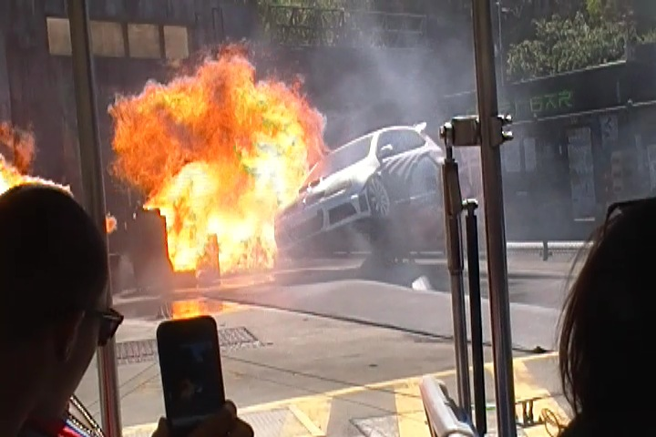

Universal Studios Hollywood 2011

Well, this weekend I finally took the plunge and went to Universal Studios Hollywood. I had been planning to come to USH for years so I could get my Mummy Credit and just generally see how the place changed since 2003, but I always procrastinated, convincing myself that it wasn't worth the price, to spend the time and money on various other updates, and just wait till Transformers opened to head to Universal Studios. Well, I finally said to myself "Enough is enough!!!" and just went over to Universal Studios Hollywood.
Yep. I've finally made it back to Universal Studios Hollywood.
All right. First up, the Simpsons Ride.
Good news. The Simpsons Ride totally kicked ass!!! It's without a doubt, the best Non-Spiderman type of simulator ridden by Incrediblecoasters.
Nope. There is absolutely nothing wrong with this mirror whatsoever.

Come on you guys!!!! Take the stairs!!!! You guys need the exercise!!!
 Finally!!!! I finally got my CA Mummy Credit!!!!!!
Finally!!!! I finally got my CA Mummy Credit!!!!!!
 It was a really good ride. While Florida's still much better, I found the CA version to be awesome as well, it even had a few pops of mild ejector air. But why did the ending have to be such a big letdown. Yeah. You think Adventure Express @ Kings Island or Ninja @ SFMM has a let down ending, this is much much worse. Couldn't they have AT LEAST had the Screaming Coffee Guy at the end like in Florida? But oh well. It's still a really good coaster.
It was a really good ride. While Florida's still much better, I found the CA version to be awesome as well, it even had a few pops of mild ejector air. But why did the ending have to be such a big letdown. Yeah. You think Adventure Express @ Kings Island or Ninja @ SFMM has a let down ending, this is much much worse. Couldn't they have AT LEAST had the Screaming Coffee Guy at the end like in Florida? But oh well. It's still a really good coaster.
Up next, Jurrassic Park.

While not anything special, it's still a fun shoot the chutes ride.
Plus, it has dinosaurs spit in your face. (I know many people who really deserve to get spit in the face (or eaten) by a real dinosaur.) ;)
All right. They even have Moes here. That's awesome.
Proof that Back to the Future used to be at Universal Studios.
I just had to try a Flaming Moe. It was good, but not worth the $5.00 price.
Umm, first of all, there's no such thing as ghosts. And even if there were, a dragon's breath wouldn't kill it, because ghosts are f*cking immortal. FAIL!!!!
Well, at least this sign was funny.
This 3D Show on the other hand, really kicked ass!!! 2 thumbs up from Incrediblecoasters!!!
I love the setting at Universal Studios Hollywood. That and the fact that they actually play good music over here makes it a good place to just relax.
Hmm. Perhaps you can use this to your advantage in trying to build a new coaster USH desperatley needs. (Hint Hint) ;)
 As I'm making this update, I really want a Coke. Perhaps I should take a quick break.
As I'm making this update, I really want a Coke. Perhaps I should take a quick break.
Time for lunch. I'll go ahead and try out the Flinstones BBQ.
Dude. The food here is actually really good!!! (Why don't more places have soups and chillis in bread bowls?))

All right. Up next, Waterworld.

"I WILL NOT TOLERATE ANY DANS IN MY AUDIENCE!!!!! YOU MOTHERF*CKERS ARE GONNA GET WET!!!!!!"

Dude!!! Waterworld kicked total ass!!!! Definetly my favorite Non-Disney Show.
And of course, I had to try the Studio Tour. Especially with the new King Kong section.
You see these movies? These are actually good movies. Dear Hollywood, MAKE MORE OF THESE!!!!!!!
 All right. Better get comfy. This is a 1 hour tour.
All right. Better get comfy. This is a 1 hour tour.

I know I should feel sorry about this guys car getting blown up, but really, this person deserves it for driving like such a jackass.
NOT AMUSED!!!!!!
"Hey Norman!!!! Put your hands in the air and...Oh wait. That's just Osama Bin Laden. Carry On!!!"
And yep. This whole update was made possible due to the Metro. While my experience wasn't nearly as bad as last time, I'm still not a fan of the CA Public Transportation System.
Home